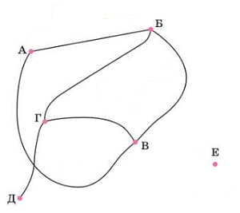
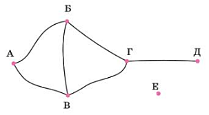
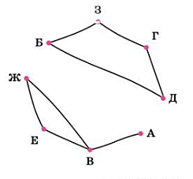

Содержание:
Одинаковость графов
| Если в двух графах вершины связаны рёбрами в одном и том же порядке, то один граф можно получить из другого, передвигая вершины. Такие графы мы считаем одинаковыми. |
|
В графе важны только сами вершины и связи между ними; взаимное расположение вершин не важно. Можно представлять себе графГрафИзображение объектов и связей между ними с помощью точек и линий. как пуговицы, соединённые длинными нитками. Пуговицы можно двигать как угодно, лишь бы нитки не рвались. Например, на этих рисунках показаны два графа, полученные друг из друга «движением вершин». Проверьте, что вершины в обоих графах связаны одинаково. Такие графы мы будем считать одинаковыми. Если вершин и ребер много, определить, одинаковы ли графы на разных рисунках, непросто. |
 |  |
ПРИМЕР. На рисунках изображены одинаковые графы или различные?
И в том, и в другом графе ребра одни и те же: АВ, ВЖ, ВЕ, БЗ, БД, ДГ, ЖЕ и ГЗ.
Нам удалось показать, что вершины в этих двух графах связаны одинаково. Значит, графы одинаковы.
 |  |
ГрафГрафИзображение объектов и связей между ними с помощью точек и линий. на рисунке на втором рисунке удобнее. Видно, что он состоит из двух не связанных частей.
| Нужно стараться изображать графы как можно проще и яснее. Если с первого раза не получилось, лучше перерисовать граф в более удобном виде. |